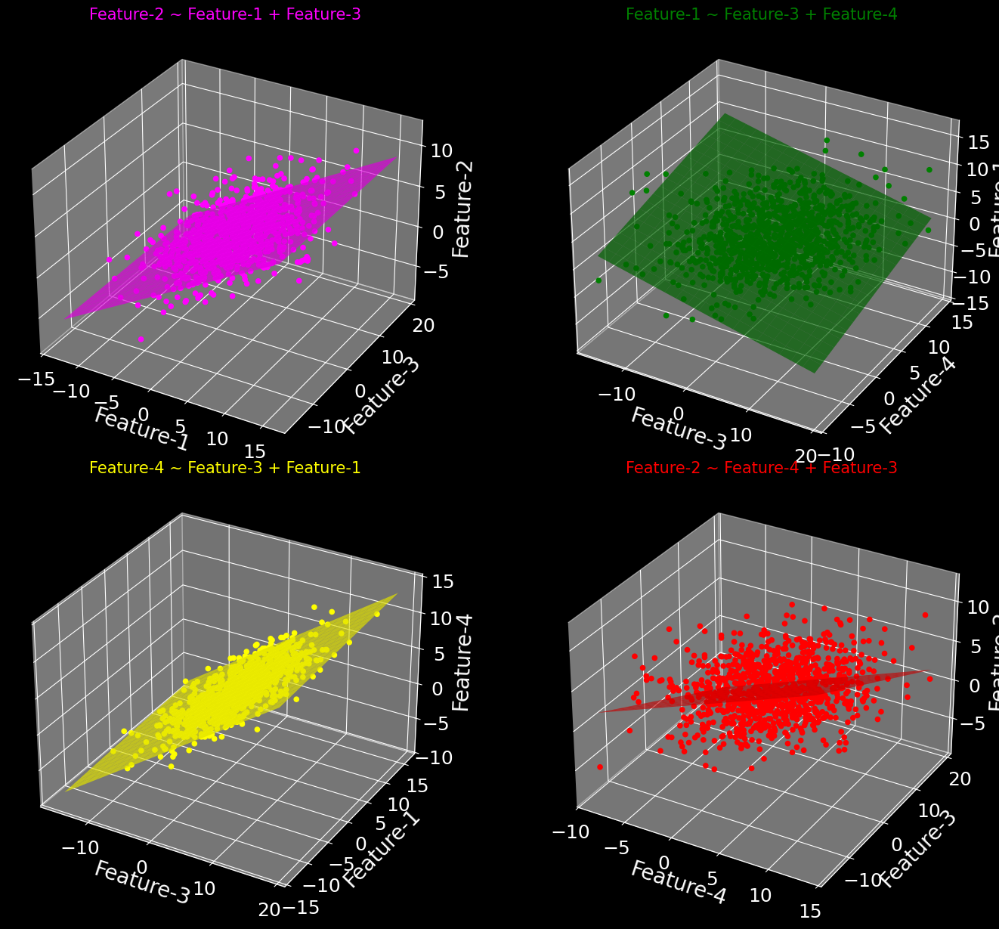

PCA vs Feature Agglomeration#
import warnings
import numpy as np
import pandas as pd
import matplotlib.pyplot as plt
from mpl_toolkits.mplot3d import Axes3D
from matplotlib.animation import FuncAnimation
from sklearn.linear_model import LinearRegression
from sklearn.cluster import FeatureAgglomeration
from IPython.display import HTML
np.random.seed(47); plt.style.use('dark_background')
warnings.filterwarnings('ignore')
plt.rc('axes', titlesize=15, labelsize=20, labelpad=5)
plt.rc('xtick', labelsize=18)
plt.rc('ytick', labelsize=18)
plt.rc('legend', fontsize=12)
plt.rc('animation', embed_limit=500)
# Generate synthetic data
f1 = np.random.normal(1, 5, 1000)
f2 = 0.5 * f1 + 0.5 * np.random.normal(2, 5, 1000)
f3 = np.random.normal(3, 5, 1000)
f4 = (
0.6 * f3 + 0.1 * f2 +
0.3 * np.random.normal(4, 5, 1000)
)
df = pd.DataFrame(dict(
feature_1=f1,
feature_2=f2,
feature_3=f3,
feature_4=f4
))
df.sample(1)
| feature_1 | feature_2 | feature_3 | feature_4 | |
|---|---|---|---|---|
| 536 | -11.447977 | -3.862544 | -5.631364 | -3.024381 |
combinations = [
('feature_1', 'feature_3', 'feature_2'),
('feature_3', 'feature_4', 'feature_1'),
('feature_3', 'feature_1', 'feature_4'),
('feature_4', 'feature_3', 'feature_2')
]
# Function to transform the feature name
def transform_feature_name(feature):
"""feature_1 -> Feature"""
p1, p2 = feature.split('_')
return f"{p1.capitalize()}-{p2}"
# Function to display the modeled relationship
def format_title(features):
"""For formatting plot title."""
ffs = [
transform_feature_name(f) for f in features
]
if len(ffs) > 1:
return f"{ffs[-1]} ~ {' + '.join(ffs[:-1])}"
else:
return ffs[0]
# Colors for each combination
colors = ['magenta', 'green', 'yellow', 'red']
# Define the figure for 4 subplots
fig = plt.figure(figsize=(16, 12))
axes = [
fig.add_subplot(2, 2, i+1, projection='3d')
for i in range(4)
]
scatters = []
for i, (x, y, z) in enumerate(combinations):
scatter = axes[i].scatter(df[x], df[y], df[z],
c=colors[i], marker='o',
alpha=1)
axes[i].set_xlabel(transform_feature_name(x))
axes[i].set_ylabel(transform_feature_name(y))
axes[i].set_zlabel(transform_feature_name(z))
axes[i].set_title(
format_title([x, y, z]),
color=colors[i]
)
# Train linear regression model
X = df[[x, y]]
y_val = df[z]
# Initialize the model and fit it
model = LinearRegression()
model.fit(X, y_val)
# Create a grid to plot the hyperplane
x_range = np.linspace(df[x].min(), df[x].max(), 20)
y_range = np.linspace(df[y].min(), df[y].max(), 20)
xx, yy = np.meshgrid(x_range, y_range)
# Predict z values using the model
zz = (
model.predict(np.c_[xx.ravel(), yy.ravel()])
.reshape(xx.shape)
)
# Plot the hyperplane
axes[i].plot_surface(xx, yy, zz,
color=colors[i], alpha=0.7)
scatters.append(scatter)
plt.subplots_adjust(wspace=0, hspace=0.1)
plt.tight_layout(pad=0)
plt.show()

def animate(frame):
for ax in axes:
# Add some padding to ensure the view is spacious
xlim = ax.get_xlim()
ylim = ax.get_ylim()
zlim = ax.get_zlim()
padding = 0.1
ax.set_xlim([xlim[0] - padding, xlim[1] + padding])
ax.set_ylim([ylim[0] - padding, ylim[1] + padding])
ax.set_zlim([zlim[0] - padding, zlim[1] + padding])
ax.view_init(elev=30, azim=frame)
ax.grid(False)
ax.set_axis_off()
# Cluster features using FeatureAgglomeration
# You can also specify the distance threshold
fa = FeatureAgglomeration(n_clusters=2)
fa_labels = fa.fit_transform(df.values)
print(
f"""First cluster: {
df.columns[fa.labels_ == 0].tolist()
}
Second cluster: {
df.columns[fa.labels_ == 1].tolist()
}"""
)
First cluster: ['feature_1', 'feature_2']
Second cluster: ['feature_3', 'feature_4']
ani = FuncAnimation(fig, animate,
frames=np.arange(0, 360, 2),
interval=5)
HTML(ani.to_jshtml())
---------------------------------------------------------------------------
KeyboardInterrupt Traceback (most recent call last)
Cell In[5], line 4
1 ani = FuncAnimation(fig, animate,
2 frames=np.arange(0, 360, 2),
3 interval=5)
----> 4 HTML(ani.to_jshtml())
File ~/anaconda3/envs/book_env/lib/python3.10/site-packages/matplotlib/animation.py:1376, in Animation.to_jshtml(self, fps, embed_frames, default_mode)
1372 path = Path(tmpdir, "temp.html")
1373 writer = HTMLWriter(fps=fps,
1374 embed_frames=embed_frames,
1375 default_mode=default_mode)
-> 1376 self.save(str(path), writer=writer)
1377 self._html_representation = path.read_text()
1379 return self._html_representation
File ~/anaconda3/envs/book_env/lib/python3.10/site-packages/matplotlib/animation.py:1122, in Animation.save(self, filename, writer, fps, dpi, codec, bitrate, extra_args, metadata, extra_anim, savefig_kwargs, progress_callback)
1119 for data in zip(*[a.new_saved_frame_seq() for a in all_anim]):
1120 for anim, d in zip(all_anim, data):
1121 # TODO: See if turning off blit is really necessary
-> 1122 anim._draw_next_frame(d, blit=False)
1123 if progress_callback is not None:
1124 progress_callback(frame_number, total_frames)
File ~/anaconda3/envs/book_env/lib/python3.10/site-packages/matplotlib/animation.py:1158, in Animation._draw_next_frame(self, framedata, blit)
1156 self._pre_draw(framedata, blit)
1157 self._draw_frame(framedata)
-> 1158 self._post_draw(framedata, blit)
File ~/anaconda3/envs/book_env/lib/python3.10/site-packages/matplotlib/animation.py:1183, in Animation._post_draw(self, framedata, blit)
1181 self._blit_draw(self._drawn_artists)
1182 else:
-> 1183 self._fig.canvas.draw_idle()
File ~/anaconda3/envs/book_env/lib/python3.10/site-packages/matplotlib/backend_bases.py:1891, in FigureCanvasBase.draw_idle(self, *args, **kwargs)
1889 if not self._is_idle_drawing:
1890 with self._idle_draw_cntx():
-> 1891 self.draw(*args, **kwargs)
File ~/anaconda3/envs/book_env/lib/python3.10/site-packages/matplotlib/backends/backend_agg.py:382, in FigureCanvasAgg.draw(self)
379 # Acquire a lock on the shared font cache.
380 with (self.toolbar._wait_cursor_for_draw_cm() if self.toolbar
381 else nullcontext()):
--> 382 self.figure.draw(self.renderer)
383 # A GUI class may be need to update a window using this draw, so
384 # don't forget to call the superclass.
385 super().draw()
File ~/anaconda3/envs/book_env/lib/python3.10/site-packages/matplotlib/artist.py:94, in _finalize_rasterization.<locals>.draw_wrapper(artist, renderer, *args, **kwargs)
92 @wraps(draw)
93 def draw_wrapper(artist, renderer, *args, **kwargs):
---> 94 result = draw(artist, renderer, *args, **kwargs)
95 if renderer._rasterizing:
96 renderer.stop_rasterizing()
File ~/anaconda3/envs/book_env/lib/python3.10/site-packages/matplotlib/artist.py:71, in allow_rasterization.<locals>.draw_wrapper(artist, renderer)
68 if artist.get_agg_filter() is not None:
69 renderer.start_filter()
---> 71 return draw(artist, renderer)
72 finally:
73 if artist.get_agg_filter() is not None:
File ~/anaconda3/envs/book_env/lib/python3.10/site-packages/matplotlib/figure.py:3257, in Figure.draw(self, renderer)
3254 # ValueError can occur when resizing a window.
3256 self.patch.draw(renderer)
-> 3257 mimage._draw_list_compositing_images(
3258 renderer, self, artists, self.suppressComposite)
3260 renderer.close_group('figure')
3261 finally:
File ~/anaconda3/envs/book_env/lib/python3.10/site-packages/matplotlib/image.py:134, in _draw_list_compositing_images(renderer, parent, artists, suppress_composite)
132 if not_composite or not has_images:
133 for a in artists:
--> 134 a.draw(renderer)
135 else:
136 # Composite any adjacent images together
137 image_group = []
File ~/anaconda3/envs/book_env/lib/python3.10/site-packages/matplotlib/artist.py:71, in allow_rasterization.<locals>.draw_wrapper(artist, renderer)
68 if artist.get_agg_filter() is not None:
69 renderer.start_filter()
---> 71 return draw(artist, renderer)
72 finally:
73 if artist.get_agg_filter() is not None:
File ~/anaconda3/envs/book_env/lib/python3.10/site-packages/mpl_toolkits/mplot3d/axes3d.py:445, in Axes3D.draw(self, renderer)
441 zorder_offset = max(axis.get_zorder()
442 for axis in self._axis_map.values()) + 1
443 collection_zorder = patch_zorder = zorder_offset
--> 445 for artist in sorted(collections_and_patches,
446 key=lambda artist: artist.do_3d_projection(),
447 reverse=True):
448 if isinstance(artist, mcoll.Collection):
449 artist.zorder = collection_zorder
File ~/anaconda3/envs/book_env/lib/python3.10/site-packages/mpl_toolkits/mplot3d/axes3d.py:446, in Axes3D.draw.<locals>.<lambda>(artist)
441 zorder_offset = max(axis.get_zorder()
442 for axis in self._axis_map.values()) + 1
443 collection_zorder = patch_zorder = zorder_offset
445 for artist in sorted(collections_and_patches,
--> 446 key=lambda artist: artist.do_3d_projection(),
447 reverse=True):
448 if isinstance(artist, mcoll.Collection):
449 artist.zorder = collection_zorder
File ~/anaconda3/envs/book_env/lib/python3.10/site-packages/mpl_toolkits/mplot3d/art3d.py:1161, in Poly3DCollection.do_3d_projection(self)
1157 cedge = cedge.repeat(len(xyzlist), axis=0)
1159 if xyzlist:
1160 # sort by depth (furthest drawn first)
-> 1161 z_segments_2d = sorted(
1162 ((self._zsortfunc(zs.data), np.ma.column_stack([xs, ys]), fc, ec, idx)
1163 for idx, ((xs, ys, zs), fc, ec)
1164 in enumerate(zip(xyzlist, cface, cedge))),
1165 key=lambda x: x[0], reverse=True)
1167 _, segments_2d, self._facecolors2d, self._edgecolors2d, idxs = \
1168 zip(*z_segments_2d)
1169 else:
File ~/anaconda3/envs/book_env/lib/python3.10/site-packages/mpl_toolkits/mplot3d/art3d.py:1162, in <genexpr>(.0)
1157 cedge = cedge.repeat(len(xyzlist), axis=0)
1159 if xyzlist:
1160 # sort by depth (furthest drawn first)
1161 z_segments_2d = sorted(
-> 1162 ((self._zsortfunc(zs.data), np.ma.column_stack([xs, ys]), fc, ec, idx)
1163 for idx, ((xs, ys, zs), fc, ec)
1164 in enumerate(zip(xyzlist, cface, cedge))),
1165 key=lambda x: x[0], reverse=True)
1167 _, segments_2d, self._facecolors2d, self._edgecolors2d, idxs = \
1168 zip(*z_segments_2d)
1169 else:
File ~/anaconda3/envs/book_env/lib/python3.10/site-packages/numpy/ma/extras.py:308, in _fromnxfunction_seq.__call__(self, x, *args, **params)
306 _d = func(tuple([np.asarray(a) for a in x]), *args, **params)
307 _m = func(tuple([getmaskarray(a) for a in x]), *args, **params)
--> 308 return masked_array(_d, mask=_m)
File ~/anaconda3/envs/book_env/lib/python3.10/site-packages/numpy/ma/core.py:2868, in MaskedArray.__new__(cls, data, mask, dtype, copy, subok, ndmin, fill_value, keep_mask, hard_mask, shrink, order)
2864 _data._mask = data._mask
2865 # FIXME: should we set `_data._sharedmask = True`?
2866 # Process mask.
2867 # Type of the mask
-> 2868 mdtype = make_mask_descr(_data.dtype)
2869 if mask is nomask:
2870 # Case 1. : no mask in input.
2871 # Erase the current mask ?
2872 if not keep_mask:
2873 # With a reduced version
File ~/anaconda3/envs/book_env/lib/python3.10/site-packages/numpy/ma/core.py:1382, in make_mask_descr(ndtype)
1352 def make_mask_descr(ndtype):
1353 """
1354 Construct a dtype description list from a given dtype.
1355
(...)
1380
1381 """
-> 1382 return _replace_dtype_fields(ndtype, MaskType)
File ~/anaconda3/envs/book_env/lib/python3.10/site-packages/numpy/ma/core.py:1348, in _replace_dtype_fields(dtype, primitive_dtype)
1339 """
1340 Construct a dtype description list from a given dtype.
1341
(...)
1345 Arguments are coerced to dtypes first.
1346 """
1347 dtype = np.dtype(dtype)
-> 1348 primitive_dtype = np.dtype(primitive_dtype)
1349 return _replace_dtype_fields_recursive(dtype, primitive_dtype)
KeyboardInterrupt:
Aspect |
Feature Agglomeration |
PCA |
|---|---|---|
Purpose |
Groups similar features |
Transforms features to PCs |
Interpretability |
More interpretable |
Less interpretable |
Nonlinearity |
Can handle nonlinear relationships |
Linear relationships only |
Complexity |
Can be computationally expensive |
More computationally efficient |
Use Case |
High number of correlated features (creating feature sets for AD) |
Reducing dimensionality with variance retention |
from sklearn.decomposition import PCA
from sklearn.preprocessing import StandardScaler
pca = PCA(n_components=0.95)
pca.fit(StandardScaler().fit_transform(df.values))
m, n = pca.components_.shape
loadings_df = pd.DataFrame(
pca.components_,
columns=[f'Feature {i+1}' for i in range(n)],
index=[f'PC{i+1}' for i in range(m)]
)
print("PCA Loadings:")
print(loadings_df)
explained_variance = pca.explained_variance_ratio_
print("\nExplained Variance by each PC:")
print(explained_variance)
PCA Loadings:
Feature 1 Feature 2 Feature 3 Feature 4
PC1 -0.088938 -0.058989 0.706076 0.700048
PC2 0.700179 0.704659 0.040405 0.107578
PC3 0.707200 -0.698756 0.089768 -0.059574
Explained Variance by each PC:
[0.47289268 0.42807882 0.07267809]